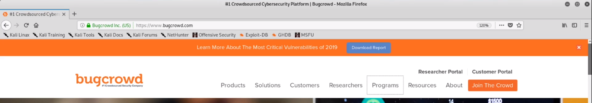

Bug crowd : it is website which give bug bounty plateform . here many company lounch program for bug bounty . we can try these for praticing , it is ethically legal . but make sure you only attack to target domain only .
so it is important to verify target .
here we are gathering info for
for now it is part of this program , if it is not you can select another , process remain same .

click on program
search any company or organisation
read program details carefully
it has 2 section
1. domain to target (attack)
2. domain out of scope ( do'nt attack)
we only need to attack target domain